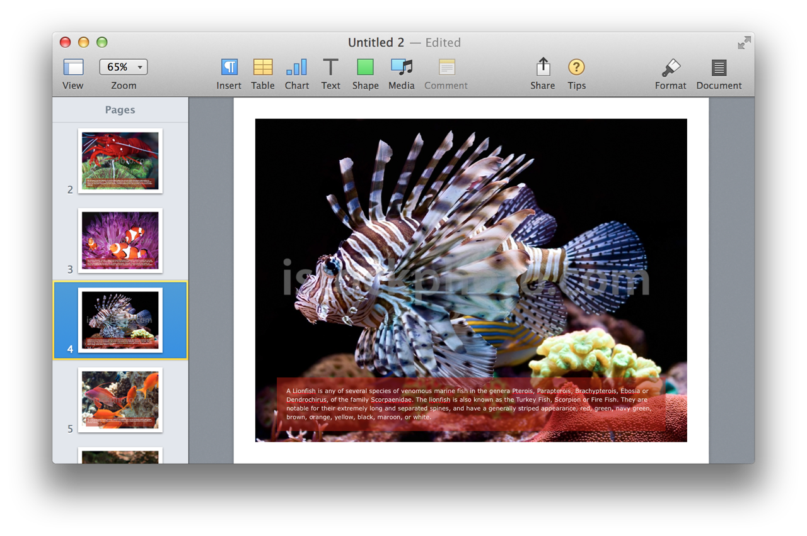

Documents created by any of the iWork applications, Pages, Numbers, or Keynote, can incorporate a common set of elements, including images, shapes, lines, tables, charts, movies, and audio clips. To AppleScript and the built-in scripting support of the iWork applications, these elements are considered iWork Items, and share a common set of properties, detailed in the iWork Item class from the iWork Suite:
The iWork Suite iWork item Class
iWork item n [inh. iWork item ] : An item which supports formatting.
elements
contained by slides, document.
properties
height ( integer ) : The height of the iWork item.
locked ( boolean ) : Whether the object is locked.
parent ( iWork container r/o ) : The iWork container containing this iWork item.
position ( point ) : The horizontal and vertical coordinates of the top left point of the iWork item.
width ( integer ) : The width of the iWork item.
responds to
delete, exists
The properties in the iWork item class can be accessed and changed for any of the common iWork elements. For example, a script can get or set the position of a movie, or image, or shape, or any of the common elements.
In addition to sharing a common set of properties with the other iWork elements, each iWork element has its own set of properties, particular to that element. For example, the element-specific properties of an image are detailed in its dictionary listing, found in the iWork Suite: (⬇ see below )
The iWork Suite image Class
image n [inh. iWork item ] : An image container.
elements
contained by slides, document.
properties
description ( text ) : Text associated with the image, can be read aloud by VoiceOver.
file ( file , r/o) : The image file. This property is a required parameter when used with the make command to create a new image item on a slide. Use the file name property to retrieve the name of the image, or to replace the currently displayed image.
file name ( text or file ) : When used with the get command, the value of this property is the file name of the image file currently displayed in the image container. When this property is used with the set command, the value of the property is a file reference (in HFS alias format) to the image file to be used to replace the currently displayed image.
opacity ( integer ) : The opacity of the image, in percent (0 to 100).
reflection showing ( boolean ) : Is the image displaying a reflection?
reflection value ( integer ) : The percentage of reflection of the image, from 0 (none) to 100 (full).
rotation ( integer ) : The rotation of the image item, in degrees from 0 to 359.
responds to
delete, exists, make
Images are added to to the page of a document using the make command and the image file property. By default, Pages will wrap the image container to fit the added image, and then scale the image to be centered in the section of the page currently displayed in the document window.
DO THIS ►DOWNLOAD and unpack the ZIP archive containing the example images. Place the folder containing the images in your Pictures folder.
The following script example creates a photo book using selected image files. The script:
- prompts the user to select a group of image files with landscape orientation to import.
- imports each image file to its own page, centering the image file on the page.
- extracts the caption metadata from the image on places it in a newly created text item, overlaid on a translucent shape at the bottom of the image.
